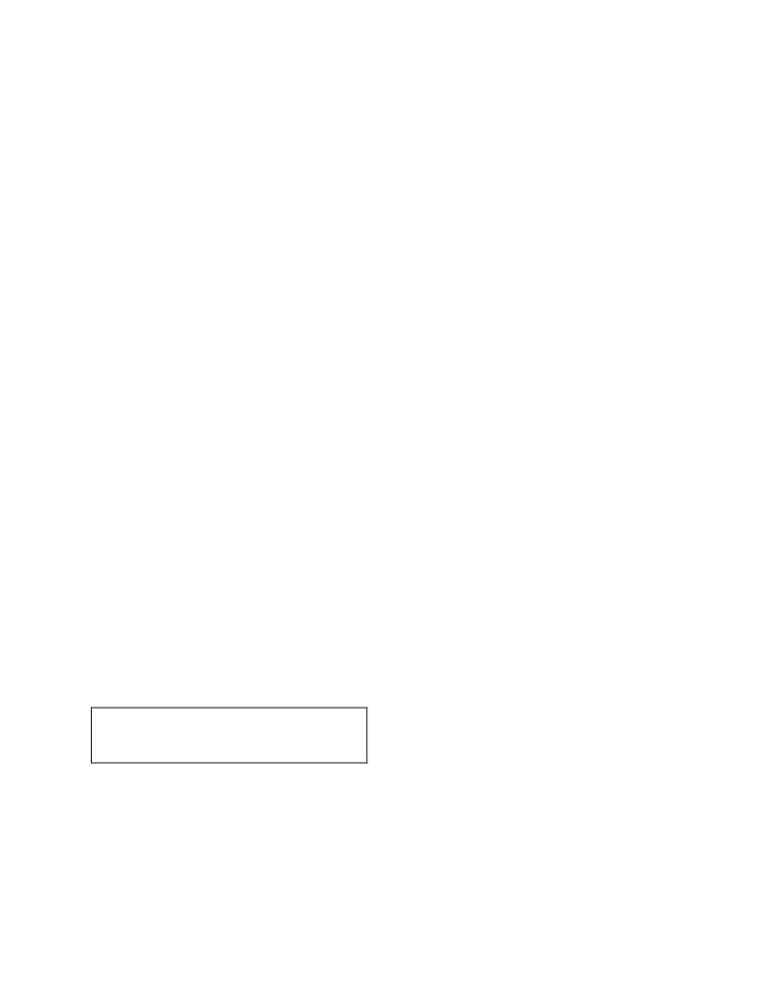

www.ncrtsolutions.in www.ncrtsolutions.com
Ch 1 Who Did Patrick's Homework
Answer the following questions. (Refer to that part of the
text whose number is given against the question. This applies
to the comprehension questions throughout the book.)
1. What did Patrick think his cat was playing with? What was it
really? (2)
Answer
Patrick thought that his cat was playing with a little doll but it
was really a man of the tiniest size.
2. Why did the little man grant Patrick a wish? (2)
Answer
The little man granted Patrick a wish because he wanted to get
free from cat.
3. What was Patrick's wish? (3)
Answer
Patrick wanted the little man to do all his homework till the end
of the semester, which was for 35 days.
4. In what subjects did the little man need help, to do Patrick's
www.ncrtsolutions.in www.ncrtsolutions.com
homework? (5,6)
Answer
The little man needed Patrick's help in English, Maths and
human history.
5. How did Patrick help him? (7)
Answer
Patrick helped him by consulting a dictionary, guiding the little
man in doing sums in arithmetic and read out portions from
history book.
6. Who do you think did Patrick's homework - the little man, or
Patrick himself? Give reasons for your answer. (9,10)
Answer
It was not the little man but Patrick himself had did his
homework as little man did not know anything, in
English, maths and human history. Patrick had to consult
dictionary, guide him with maths and help him to read too. He
stayed up at nights and worked hard. Therefore, it was Patrick
who did the homework.
www.ncrtsolutions.in www.ncrtsolutions.com
Ch 2 How the dog found himself a master!
A. Discuss these questions in pairs before you write the
answers.
1. Why did the dog feel the need for a master? (1, 2)
Answer
The dog felt the need for a master because he was sick and tired
of wandering about alone, looking for food and afraid of those
who were stronger than him.
2. Who did he first choose as his master? Why did he leave that
master? (3)
Answer
The dog first chose a big, strong and fierce wolf as his master.
Once, The dog saw that the wolf was afraid that the bear would
eat them up. Since the dog wanted to serve only the strongest, he
left the wolf and asked the bear who was stronger than the wolf
to be his master.
3. Who did he choose next? (3)
Answer
He chose the bear to be his next master.
www.ncrtsolutions.in www.ncrtsolutions.com
4. Why did he serve the Lion for a long time?
Answer
He serve the Lion for a long time because he found there was no
more powerful and stronger than lion in the forest and so no one
dared to touch the dog or offend him in any way. Therefore, the
dog lived happily by serving the lion for a long time.
5. Who did he finally choose as his master and why?
Answer
He finally chose man as his master because one day he realised
that lion was afraid of man. As he wanted to serve someone who
was the most powerful and stronger than anyone on earth, he
chose man as his master.
B. A summary of the story is given below. Fill in the blanks
to complete it taking appropriate phrases from the box.
a dog
stronger than anyone else
the strongest of all
a wolf
the bear
afraid of man
his own master
a lion
This is the story of
—-----—, who used to be ————— .
He decided to find a master —-------—— . First he found —
———— , but the wolf was afraid of ---————-- . The
dog thought that the bear was ———— . After some time the
www.ncrtsolutions.in www.ncrtsolutions.com
dog met —————— , who seemed the strongest. He stayed
with the lion for a long time. One day he realised that the lion
was ———— . To this day, the dog remains man’s best friend.
Answer
This is the story of a dog, who used to be his own master . He
decided to find a master stronger than anyone else. First
he found a wolf , but the wolf was afraid of the bear . The dog
thought that the bear was the strongest of all. After some time
the dog met a lion , who seemed the strongest. He stayed with
the lion for a long time. One day he realised that the lion was
afraid of man. To this day, the dog remains man’s best friend.
www.ncrtsolutions.in www.ncrtsolutions.com
Ch 3 Taro's reward
A. Answer the following questions.
1. Why did Taro run in the direction of the stream? (5)
Answer
Taro run in the direction of the stream because earlier he had
never heard or seen a rushing stream in the forest also he was
thirsty.
2. How did Taro’s father show his happiness after drinking
saké? (7)
Answer
After drinking saké, Taro’s father show his happiness by doing a
little dance in the middle of the floor.
3. Why did the waterfall give Taro saké and others water? (12)
Answer
The waterfall give Taro saké and others water because he was a
thoughtful son who honoured and obeyed his parents always and
worked very hard to give them everything they needed while
others were greedy.
4. Why did the villagers want to drown Taro? (10,11)
www.ncrtsolutions.in www.ncrtsolutions.com
Answer
The villagers want to drown Taro because they thought that he
had tricked them by telling that stream gives saké.
5. Why did the Emperor reward Taro? (13)
Answer
The emperor rewarded Taro for as he honoured and obeyed his
parents. This was done to encourage all the children to honor
and obey their parents.
B. Mark the right item.
1. Taro earned very little money because
(i) he didn’t work hard enough.
(ii) the villagers didn’t need wood.
(iii) the price of wood was very low.
► (iii) the price of wood was very low.
2. Taro decided to earn extra money
(i) to live a more comfortable life.
(ii) to buy his old father some saké.
(iii) to repair the cracks in the hut.
► (ii) to buy his old father some saké.
3. The neighbour left Taro’s hut in a hurry because
(i) she was delighted with the drink.
(ii) she was astonished to hear Taro’s story.
www.ncrtsolutions.in www.ncrtsolutions.com
(iii) she wanted to tell the whole village about the waterfall.
► (iii) she wanted to tell the whole village about the waterfall.
www.ncrtsolutions.in www.ncrtsolutions.com
Ch 4 An Indian-American Women in Space:
Kalpana Chawla
1. Where was Kalpana Chawla born? Why is she called an
Indian - American? (3)
Answer
Kalpana Chawla was born in Karnal, Haryana. She was called an
Indian-American because she went to US and became its
naturalised citizen.
2. When and why did she go to the U.S.? Who did she marry?
(2, 3)
Answer
She went to US after completing a Bachelor of Science degree
in aeronautical engineering for pursuing master’s degree. She
married flight instructor Jean-Pierre Harrison.
3. How did she become an astronaut? What gave her the idea
that she could be an astronaut? (3)
Answer
www.ncrtsolutions.in www.ncrtsolutions.com
After qualifying as a pilot, Chawla applied to NASA space shuttle
program. She was first hired as a research Scientist at NASA. In
1994 she was selected at NASA for training as an astronaut. It
was her success as a pilot which gave her the idea that she
could become an astronaut.
4. What abilities must an astronaut have, according to the
journalist? (6)
Answer
According to the journalist, it takes enormous ability to be an
astronaut. An astronaut must know a lot about everything,
from biology to astrophysics to aeronautical engineering. In this
age of super-specialisation, you must have encyclopedic
knowledge to be an astronaut.
5. Describe Kalpana Chawla’s first mission in space. (5)
Answer
Kalpana Chawla’s first mission was in the space shuttle
Columbia. It was a 15 days, 16 hours and 34 minutes. During
this time, she went around the earth 252 times travelling 1.45
million km. The crew performed experiments such as
pollinating plants to observe food growth in space. It also made
test for making stronger metals and faster computer chips. It
www.ncrtsolutions.in www.ncrtsolutions.com
was all done for a price tag of 56 million dollars.
6. What does Kalpana Chawla say about pursuing a dream? Do
you agree with her that success is possible? (7)
Answer
Kalpana Chawla said that the path from dreams to success does
exist. One needs to have the vision to find it, and the courage
to get onto it. Yes, success is possible.
www.ncrtsolutions.in www.ncrtsolutions.com
Ch 5 A Different kind of school
A. Put these sentences from the story in the right order and write
them out in a paragraph. Don’t refer to the text.
• I shall be so glad when today is over.
• Having a leg tied up and hopping about on a crutch is almost
fun, I guess.
• I don’t think I’ll mind being deaf for a day — at least not
much.
• But being blind is so frightening.
• Only you must tell me about things.
• Let’s go for a little walk.
• The other bad days can’t be half as bad as this.
Answer
Let's go for a little walk. Only you must tell me about things. I
shall be so glad when today is over. The other bad days can't be
half as bad as this. Having a leg tied up and hopping about on a
crutch is almost fun, I guess. I don't think I'll mind being deaf
for a day - at least not much. But being blind is so frightening.
B. Answer the following questions
1. Why do you think the writer visited Miss Beam’s school? (1)
Answer
The writer visited Miss Beam’s school because he had heard a
great deal about the school.
www.ncrtsolutions.in www.ncrtsolutions.com
Page No: 63
2. What was the ‘game’ that every child in the school had to
play? (9)
Answer
The 'game' that every child in the school had to play was that
each term every child had one blind day, one lame day, one deaf
day, one injured day and one dumb day.
3.
“Each term every child has one blind day, one lame day…”
Complete the line. Which day was the hardest? Why was it the
hardest? (9, 11, 15)
Answer
"Each term every child has one blind day, one lame day, one
deaf day, one injured day and one dumb day." The dumb day
was the hardest because the children's mouths could not be
bandaged, so they really had to exercise their will power to
remain silent.
4. What was the purpose of these special days? (5, 9)
Answer
The purpose of these special days was to teach the children
thoughtfulness - kindness to others, and how to be responsible
citizens. These days make the children appreciate and
www.ncrtsolutions.in www.ncrtsolutions.com
understand misfortune by making them share in the misfortune
of others.
www.ncrtsolutions.in www.ncrtsolutions.com
Ch 6 Who I Am
A. Answer the following questions.
1. Peter’s favourite day of the week is Sunday because ————
————————————
► on this day his whole family always goes to the cinema hall
to see a film.
2. Nasir wants to learn ——————————————————
—
► how to preserve seeds so that they can be used again
without investing money on them.
3. Dolma believes that she can make a good Prime Minister
because ———————————
————————————
► she wants to make things better for everyone.
B. Write True or False against each of the following
statements.
1. Peter is an only child. ——————————
► False
www.ncrtsolutions.in www.ncrtsolutions.com
2. When Serbjit gets angry he shouts at people. ———————
———
► False
3. Nasir lives in the city. ——————————
► False
4. Radha’s mother enjoys doing things with her. ——————
————
► True
Part II
Page No: 76
Working with Text
Fill in the blanks to name the different kinds of intelligence.
One has been done for you.
When I enjoy listening to people and solving their problems I
use my interpersonal intelligence.
www.ncrtsolutions.in www.ncrtsolutions.com
(i) When I enjoy dancing or physical activity, I use my
______________ intelligence.
► bodily
(ii) When I enjoy looking at maps and examining pictures, I use
my ___________intelligence.
► visual
(iii) When I enjoy working with numbers and solving maths
problems, I use my ___________ intelligence.
► mathematical
(iv) When I enjoy telling a story or arguing, I use my
____________ intelligence.
► verbal
Match the job on the left with its description on the right.
(i) Navigator - (a) Advises people what to do about jobs,
personal problems, etc.
(ii) Architect - (b) Works in politics, usually by standing for
election.
(iii) Politician - (c) Finds and monitors the route to get to a
www.ncrtsolutions.in www.ncrtsolutions.com
place, or the direction of travel.
(iv) Engineer - (d) Reports on recent news for newspaper, radio,
or TV.
(v) Computer programmer - (e) Plans the design of a building,
town, or city.
(vi) Athlete - (f) Controls and puts together a programme of
music.
(vii) Disc jockey - (g) Works in sports or activities such as
running, jumping etc.
(viii) Composer - (h) Designs and builds things like roads,
bridges, or engines.
(ix) Counsellor - (i) Makes up notes to create music.
(x) Journalist - (j) Designs the system by which a computer runs
or gives information.
Answer
(i) Navigator - (c) Finds and monitors the route to get to a place,
or the direction of travel.
(ii) Architect - (e) Plans the design of a building, town, or city.
(iii) Politician - (b) Works in politics, usually by standing for
election.
(iv) Engineer - (h) Designs and builds things like roads, bridges,
or engines.
(v) Computer Programmer - (j) Designs the system by which a
computer runs or gives information.
www.ncrtsolutions.in www.ncrtsolutions.com
(vi) Athlete - (g) Works in sports or activities such as running,
jumping etc.
(vii) Disc jockey - (f) Controls and puts together a programme of
music.
(viii) Composer - (i) Makes up notes to create music.
(ix) Counsellor - (a) Advises people what to do about jobs,
personal problems, etc.
(x) Journalist - (d) Reports on recent news for newspaper, radio,
or TV.
The Wonderful Words
- Mary O'Neil
Page No: 83
Working with Poem
1. With your partner, complete the following sentences in your
own words using the ideas in the poem.
(i) Do not let a thought shrivel and die because ———————
—————
► for want of a way to say it
www.ncrtsolutions.in www.ncrtsolutions.com
(ii) English is a
————————— with words that everyone
can play.
► wonderful game
(iii) One has to match ——————————————
► to the brightest thoughts in your head
(iv) Words are the ——————————— of thought.
► food and dress
2. In groups of four discuss the following lines and their
meanings.
(i) All that you do is match the words
To the brightest thoughts in your head
►The poet says that you only have to select words to express
your thoughts present in your head
(ii) For many of the loveliest things
Have never yet been said
www.ncrtsolutions.in www.ncrtsolutions.com
► The poet encourage readers to convert their thoughts into
words and speak them as these are loveliest things that never
yet been said.
(iii) nd everyone’s longing today to hear
Some fresh and beautiful thing
► All the people are listening to the same thoughts. Everyone
is excited to hear some new thing so speak your thoughts
brilliantly.
(iv) But only words can free a thought
From its prison behind your eyes
► You have thoughts in your mind but its in prison behind your
eyes. You need to free thoughts by giving them words.
www.ncrtsolutions.in www.ncrtsolutions.com
Ch 7 Fair Play
A. Match the sentences under I with those under II.
I
1. Jumman and Algu were the best of friends.
2. Jumman’s aunt transferred her property to him.
3. The aunt decided to appeal to the panchayat.
4. Algu was unwilling to support the aunt.
5. Jumman was very happy to hear Algu’s name as head Panch.
II
1. He believed that his friend would never go against him.
2. She wanted justice.
3. In the absence of one, the other took care of his family.
4. The condition was that he would be responsible for her
welfare.
5. The bond of friendship between him and Jumman was very
strong.
Answer
Part I
Part II
1. Jumman and Algu were the best
3. In the absence of one, the
of friends.
other took care of his family.
4. The condition was that he
2. Jumman’s aunt transferred her
would be responsible for her
property to him.
welfare.
3. The aunt decided to appeal to
2. She wanted justice.
the panchayat.
4. Algu was unwilling to support
5. The bond of friendship
the aunt.
between him
www.ncrtsolutions.in www.ncrtsolutions.com
and Jumman was very
strong.
5. Jumman was very happy to
1. He believed that his friend
hear Algu’s name as head Panch.
would never go against him.
B. Who says this to whom and why?
1. “My wife knows best how to run the house.”
► Jumman said this to his aunt because he was shameless and
had grown tired of her. she had asked him for a monthly
allowance to set up a separate kitchen, but he didn't want to give
her money.
2. “But is it right, my son, to keep mum and not say what you
consider just and fair?”
► Jumman's aunt said this to Algu because she had gone to
Algu for help, but Algu had politely refused her plea as he could
not go against his firend, Jumman.
3. “What have you to say in your defence?”
►Algu said this to Jumman because he was made the head
Panch by the aunt so he asked Jumman to say in his defence
regarding his mistreatment of the aunt.
4. “I can’t pay you a penny for the wretched beast you sold me.”
►Samjhu Sahu said this to Algu because Algu demanded
payment for the bullock he had sold to Samjhu.
5. “Victory to the panchayat. This is justice.”
► Algu said this over and over again in front of the village
because he was happy that Jumman had not deviated from the
www.ncrtsolutions.in www.ncrtsolutions.com
path of justice in spite of the enmity between them.
C. Answer the following questions.
1. “Then the situation changed.” What is being referred to? (2)
Answer
The situation being referred to is Jumman and his family’s
behaviour towards his aunt. Jumman's aunt had transferred her
property to him on the understanding that he would look after
her. The arrangement worked well for a couple of years but after
a couple of years, Jumman and his family grew tired of her. He
became as indifferent to her and his wife too grudged even the
little food that the old lady wanted everyday.
2. When Jumman’s aunt realised that she was not welcome in
his house, what arrangement did she suggest? (3)
Answer
When Jumman's aunt realised that she was not welcome in his
house she suggested that Jumman should give her a monthly
allowance so that she could set up a separate kitchen.
Page No: 92
3. What was the villagers’ reaction when the aunt explained her
case to them? (4)
Answer
www.ncrtsolutions.in www.ncrtsolutions.com
When the aunt explained her case to the villagers, some
sympathised with her, others laughed at her and a few others
advised her to make it up with her nephew and his wife.
4. Why was Jumman happy over Algu’s nomination as head
Panch? (6)
Answer
Jumman was happy over Algu's nomination as head Panch
because Algu was his best friend so he would never go against
him.
5. “God lives in the heart of the Panch.” the aunt said. What did
she mean? (6)
Answer
She meant that a Panch was always unbiased and would not kill
his conscience for the sake of friendship. Everybody is equal
before him. The justice delivered was the justice delivered by
God.
6. What was Algu’s verdict as head Panch? How did Jumman
take it? (7, 8)
Answer
Algu's verdict as head Panch was that Jumman had to pay his
www.ncrtsolutions.in www.ncrtsolutions.com
aunt a monthly allowance, or else the property would go back to
her. Jumman felt betrayed and became Algu's enemy.
7. Algu found himself in a tight spot. What was his problem? (9)
Answer
One of Algu's fine pair of bullocks died, and he sold the other to
Samjhu Sahu on the understanding that Sahu would pay the
price of the bullock in a month's time. The bullock died within a
month and Sahu refused to pay Algu.
8. Why was Algu upset over Jumman’s nomination as head
Panch? (12, 13)
Answer
Algu was upset because he was his friend no more after Algu
had given a verdict in favour of Jumman's aunt. Jumman was
Algu's enemy and wanted revenge.
9. What was Jumman’s verdict as head Panch? How did Algu
take it? (14, 15)
Answer
Jumman's verdict as head Panch was that that since the bullock
did not suffer from any disability or disease when Sahu bought
it, although the death was unfortunate Algu could not be blamed
for it. Therefore, Sahu would have to pay Algu the price of the
bullock. Algu could not contain his feelings on the verdict. He
www.ncrtsolutions.in www.ncrtsolutions.com
stood up and said loudly over and over again, "Victory to the
panchayat. This is justice. God lives in the heart of the Panch."
10. Which of the following sums up the story best?
(i) “I also know that you will not kill your conscience for the
sake of friendship.”
(ii) “Let no one deviate from the path of justice and truth for
friendship or enmity.”
(iii) “The voice of the Panch is the voice of God.”
Give a reason for your choice.
Answer
(ii) “Let no one deviate from the path of justice and truth for
friendship or enmity.”
This sentence sums up the story best because boht Algu and
Jumman gave verdict without keeping any friendship nor
enimity.
www.ncrtsolutions.in www.ncrtsolutions.com
Ch 8 A Game of Chance
A. Complete the following sentences from memory choosing
a phrase from those given in brackets.
1. ————————————— was held at the time of the
Eid festival. (A big show, A big fair, A big competition)
► A big fair
2. Tradesmen came to the village with all kinds of goods ———
——— . (to display, to buy, to sell)
► to sell
3. Uncle told me —————— while he was away. (not to buy
anything, not to go anywhere, not to talk to anyone)
► not to buy anything
4. The owner of the Lucky Shop wanted everybody present ——
————— . (to play the game, to win a prize, to try their luck)
► to try their luck
5. The first time I took a chance I got ——————————
———-— . (a bottle of ink, two pencils, a trifle)
► two pencils
6. Uncle told me that the shopkeeper had made ——————
——. (a fool of me, a good profit, friends with many people)
► a fool of me
Page no: 104
www.ncrtsolutions.in www.ncrtsolutions.com
B. Answer the following questions.
1. Why do you think Rasheed’s uncle asked him not to buy
anything in his absence? (3)
Answer
Rasheed’s uncle asked him not to buy anything in his absence
because he knew that the shopkeepers would cheat him.
2. Why was the shop called ‘Lucky Shop’? (4)
Answer
The shop was called Lucky Shop because everybody can try
their luck.
3. An old man won a clock and sold it back to the shopkeeper.
How much money did he make? (5)
Answer
The old man made 15 rupees by selling the clock back to the
shopkeeper.
4. How many prizes did the boy win? What were they? (6)
Answer
The boy won four prizes. They were a comb, a fountain pen, a
wristwatch and a table lamp.
www.ncrtsolutions.in www.ncrtsolutions.com
5. Why was Rasheed upset? (7, 8, 9)
Answer
Rasheed was upset because he had hopes of winning a big prize
and he continued trying his luck again and again. But every time
he got a trifle. People were looking at him and laughing at his
bad luck, but no one showed any sympathy. He played till he
finished all his money.
6. In what way did the shopkeeper make a fool of Rasheed? (11)
Answer
The shopkeeper played tricks to tempt to try his luck by making
him believe that it was luck that got the old man and the boy
their prizes but in reality they were friends of the shopkeeper.
Therefore, Rasheed tried his luck again and again but only got
some cheap things which he sold back to the shopkeeper and
lost all his money.
www.ncrtsolutions.in www.ncrtsolutions.com
Ch 9 Desert Animals
A. 1. Talk to your partner and say whether the following
statements are true or false.
(i) No animal can survive without water.
► True
(ii) Deserts are endless sand dunes.
► False
(iii) Most snakes are harmless.
► True
(iv) Snakes cannot hear, but they can feel vibrations through the
ground.
► True
(v) Camels store water in their humps.
► False
2. Answer the following questions.
(i) How do desert animals survive without water? (1)
Answer
Desert animals cannot survive without water. They find different
ways of coping with the harsh desert conditions. For example,
gerbils spend the hottest part of the day in cool underground
burrows. And darkling beetles catch moisture on their legs and
www.ncrtsolutions.in www.ncrtsolutions.com
then lift them into the air till the drops trickle down into their
mouths.
(ii) How do mongooses kill snakes? (6)
Answer
Mongooses kill snakes without getting hurt themselves. Their
reactions are so fast that they dodge each time the snake strikes.
They continually make a nuisance of themselves, and after a
while, when the snake gets tired, they quickly dive in for the
kill.
(iii) How does the hump of the camels help them to survive
when there is no water? (9)
Answer
The humps of the camels help the animal to survive in the
desert, by acting as storage containers. The hump is full of fat
that nourishes the camel when food is scarce. If they have
nothing to eat for
several days, their humps shrink as the fat is used up.
B. Read the words/phrases in the box. With your partner
find their meaning in the dictionary.
Harsh
conditions harmless survive intruder threatened predators pr
ey continually
www.ncrtsolutions.in www.ncrtsolutions.com
Fill in the blanks in the following passage with the above
words/phrases.
All animals in forests and deserts struggle to ______ in ______.
Though most of the animals are ______, some are dangerous
when ______. If an ______ is noticed, they attack or bite to save
themselves. They struggle ______ for food and water. Some
animals are called ______ because they ______ on other
animals.
Answer
All animals in forests and deserts struggle to survive in harsh
conditions. Though most of the animals are harmless, some are
dangerous when threatened. If an intruder is noticed, they attack
or bite to save themselves. They struggle continually for food
and water. Some animals are called predators because they prey
on other animals.
www.ncrtsolutions.in www.ncrtsolutions.com
Ch 10 The Banyan Tree
A. Complete the following sentences.
1. The old banyan tree “did not belong” to grandfather, but only
to the boy, because ____________.
► the grandfather at sixty-five could no longer climb it.
2. The small gray squirrel became friendly when
__________________ .
► he found that the boy did not arm himself with catapult or
air-gun.
3. When the boy started to bring him pieces of cake and biscuit,
the squirrel ____________________.
► quite bold and was soon taking morsels from the author's
hand.
4. In the spring, the banyan tree ___________, and __________
would come there.
► was full of small red figs, birds of all kinds
5. The banyan tree served the boy as a ______________.
► library.
6. The young boy spent his afternoons in the tree
_____________.
► when it was not too hot
Page No: 132
www.ncrtsolutions.in www.ncrtsolutions.com
B. Answer the following questions.
1. “It was to be a battle of champions.” (8)
(i) What qualities did the two champions have? Pick out words
and phrases from the paragraph above this line in the text and
write them down.
Mongoose
Cobra
(a) _________________
(a) ________________
(b) __________________
(b) _________________
(c) __________________
(c) __________________
(ii) What did the cobra and the mongoose do, to showtheir
readiness for the fight?
Answer
Mongoose
Cobra
(a) superb fighter
(a) skilful
(b) clever
(b) experienced
(c) aggresive
(c) swift
(ii) To show its readiness for the fight, the cobra hissed defiance,
his forked tongue darting in and out. It raised three of its six feet
off the ground, and spread its broad and spectacled hood. The
mongoose bushed his tail. The long hair on his spine stood up.
2. Who were the other two spectators? What did they do? (Did
they watch, or did they join in the fight?) (10)
Answer
www.ncrtsolutions.in www.ncrtsolutions.com
The other two spectators were a jungle crow and a myna. They
settled on a cactus to watch the outcome. But they did not just
watch. They tried to join the fight by hurling themselves at the
cobra.
3. Read the descriptions below of what the snake did and what
the mongoose did. Arrange their actions in the proper order. (11,
16)
• grabbed the snake by
(i) ceased to struggle
the snout
(ii) tried to mesmerise the
• dragged the snake into the
mongoose
bushes
(iii) coiled itself around the
• darted away and bit the
mongoose
cobra on the back
• pretended to attack the
(iv) struck the crow
cobra on side
• refused to look into the
(v) struck again and missed
snake's eyes
(vi) struck on the side that the
• sprang aside, jumped in
mongoose pretended to attack
and bit
Answer
Snake
Mongoose
(ii) tried to mesmerise the
• refused to look into the
mongoose
snake's eyes
(vi) struck on the side that the
• pretended to attack the
mongoose pretended to attack
cobra on side
www.ncrtsolutions.in www.ncrtsolutions.com
• sprang aside, jumped in
(v) struck again and missed
and bit
• darted away and bit the
(iv) struck the crow
cobra on the back
(iii) coiled itself around the
• grabbed the snake by
mongoose
the snout
• dragged the snake into the
(i) ceased to struggle
bushes
4. (i) What happened to the crow in the end? (16)
(ii) What did the myna do finally? (17)
Answer
(i) In the end the crow flung nearly twenty feet across the garden
by a blow from the cobra's snout. It fluttered about for a while,
then lay still.
(ii) Myna finally dropped cautiously to the ground, hopped
about, peered into the bushes from a safe distance and then with
a shrill cry of congratulations flew away.
Page No: 133
Working with Language
A. 1. The word ‘round’ usually means a kind of shape. What is
its meaning in the story?
Answer

www.ncrtsolutions.in www.ncrtsolutions.com
The word 'round' in the story means the different phases of the
fight between the cobra and the mongoose.
2. Find five words in the following paragraph, which are
generally associated with trees. But here, they have been used
differently. Underline the words.
Hari leaves for work at nine every morning. He works in the
local branch of the firm of which his uncle is the owner. Hari’s
success is really the fruit of his own labour. He is happy, but he
has a small problem. The root cause of his problem is a stray
dog near his office. The dog welcomes Hari with a loud bark
every day.
Answer
Leaves, branch, fruit, root and bark.
Page No: 134
B. The words in the box are all words that describe movement.
Use them to fill in the blanks in the sentences below.
dived gliding sprang darting
whipped... back delving
1. When he began to trust me, the squirrel began —————
into my pockets for morsels of cake.
► delving
www.ncrtsolutions.in www.ncrtsolutions.com
2. I saw a cobra ————— out of a clump of cactus.
► gliding
3. The snake hissed, his forked tongue ————— in and out.
► darting
4. When the cobra tried to bite it, the mongoose ——————
— aside.
► sprang
5. The snake —————— his head —————— to strike
at the crow.
► whipped, back
6. The birds —————— at the snake.
► dived
C. Find words in the story, which show things striking
violently against each other.
1. The cobra struck the crow, his snout th — — — ing against
its body. (15)
► thudding
2. The crow and the myna c — ll — — — — in mid-air. (13)
► collided
3. The birds dived at the snake, but b — — — — d into each
other instead. (14)
www.ncrtsolutions.in www.ncrtsolutions.com
► bumped
Page No: 135
C. Choose would and could to replace the italicised words in
the following sentences.
Grandfather says, in the old days,
1. elephants were able to fly in the sky, like clouds. They were
also able to change their shapes. They used to fly behind clouds
and frighten them. People used to look up at the sky in wonder.
► elephants could fly in the sky like clouds. They could change
their shapes. They would fly behind clouds and frighten them.
People would look up at the sky and wonder.
2. because there was no electricity, he used to get up with the
sun, and he used to go to bed with the sun, like the birds.
► because there was no electricity, he would get up with the
sun, and he would go to bed with the sun, like the birds.
3. like the owl, he was able to see quite well in the dark. He was
able to tell who was coming by listening to their footsteps.
► like the owl, he could see quite well in the dark. He could tell
who was coming by listening to their footsteps.